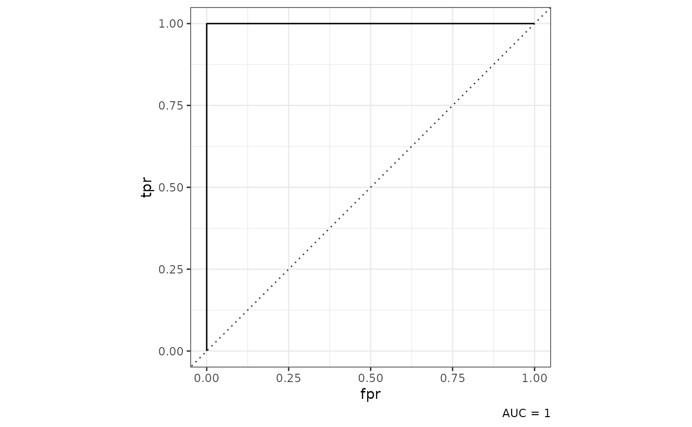
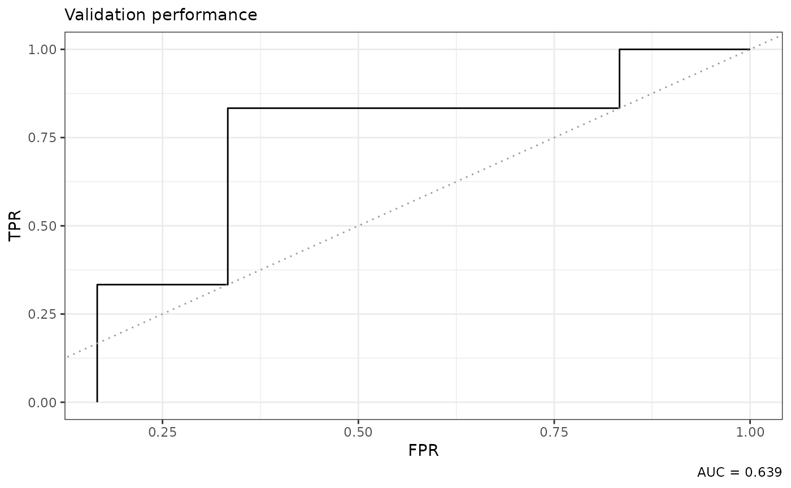
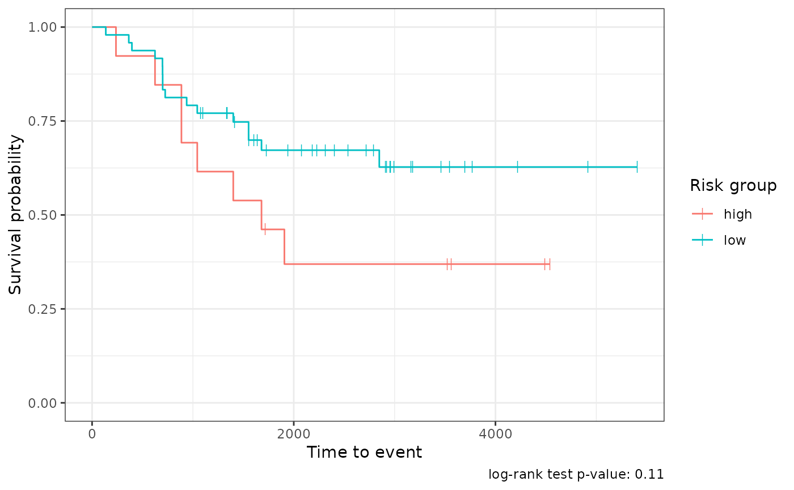

Building predictive models
Timothy Keyes
2022-01-30
modeling.Rmd
library(tidytof)
library(dplyr)
#>
#> Attaching package: 'dplyr'
#> The following objects are masked from 'package:stats':
#>
#> filter, lag
#> The following objects are masked from 'package:base':
#>
#> intersect, setdiff, setequal, union
library(ggplot2)
library(stringr)tidytof implements several functions for building predictive models using sample- or patient-level data.
Accessing the data for this vignette
To illustrate how they work, first we download some patient-level data from this paper and combining it with sample-level clinical annotations in one of tidytof’s built-in data objects (ddpr_metadata).
# link for downloading the sample-level data from the Nature Medicine website
data_link <-
"https://static-content.springer.com/esm/art%3A10.1038%2Fnm.4505/MediaObjects/41591_2018_BFnm4505_MOESM3_ESM.csv"
# downloading the data and combining it with clinical annotations
ddpr_patients <-
readr::read_csv(data_link, skip = 2L, n_max = 78L, show_col_types = FALSE) %>%
dplyr::rename(patient_id = Patient_ID) %>%
left_join(ddpr_metadata, by = "patient_id") %>%
dplyr::filter(!str_detect(patient_id, "Healthy"))
ddpr_patients %>%
select(where(~ !is.numeric(.x))) %>%
head()
#> # A tibble: 6 × 8
#> patient_id gender mrd_risk nci_rome_risk relapse_status type_of_relapse cohort
#> <chr> <chr> <chr> <chr> <chr> <chr> <chr>
#> 1 UPN1 Male Interme… Standard Yes Early Train…
#> 2 UPN1-Rx Male Interme… Standard Yes Early Train…
#> 3 UPN2 Male Interme… Standard No NA Train…
#> 4 UPN3 Female Standard Standard No NA Train…
#> 5 UPN4 Male Standard Standard No NA Valid…
#> 6 UPN5 Female Standard High No NA Valid…
#> # … with 1 more variable: ddpr_risk <chr>The data processing steps above result in the ddpr_patients tibble. The numeric columns in ddpr_patients represent aggregated cell population features for each sample (see Supplementary Table 5 in this paper for details). The non-numeric columns represent clinical metadata about each sample (run ?ddpr_metadata for more information).
There are also a few preprocessing steps that we might want to perform now to save us some headaches when we’re fitting models later.
ddpr_patients <-
ddpr_patients %>%
# convert the relapse_status variable to a factor first,
# which is something we'll want for fitting the model later
# and create the time_to_event and event columns for survival modeling
mutate(
relapse_status = as.factor(relapse_status),
time_to_event = if_else(relapse_status == "Yes", time_to_relapse, ccr),
event = if_else(relapse_status == "Yes", 1, 0)
)In the original DDPR paper, some patients were used to fit the model and the rest were used to assess the model after it was tuned. We can separate our training and validation cohorts using the cohort variable in ddpr_patients
Building a classifier using elastic net-regularized logistic regression
First, we can build an elastic net classifier to predict which patients will relapse and which patients won’t (ignoring time-to-event data for now). For this, we can use the relapse_status column in ddpr_training as the outcome variable:
# find how many of each outcome we have in our cohort
ddpr_training %>%
dplyr::count(relapse_status)
#> # A tibble: 2 × 2
#> relapse_status n
#> <fct> <int>
#> 1 No 31
#> 2 Yes 18Specifically, we can use the tof_split_data() function to split our cohort into a training and test set either once (a “simple” split) or multiple times (using either k-fold cross-validation or bootstrapping). In this case, we use 5-fold cross-validation, but reading the documentation of tof_split_data() demonstrates how to use other methods.
training_split <-
ddpr_training %>%
tof_split_data(
split_method = "k-fold",
num_cv_folds = 5,
strata = relapse_status
)
training_split
#> # 5-fold cross-validation using stratification
#> # A tibble: 5 × 2
#> splits id
#> <list> <chr>
#> 1 <split [38/11]> Fold1
#> 2 <split [39/10]> Fold2
#> 3 <split [39/10]> Fold3
#> 4 <split [40/9]> Fold4
#> 5 <split [40/9]> Fold5The output of tof_split_data() varies depending on which split_method is used. For cross-validation, the result is a rset object from the rsample package. rset objects are a type of tibble with two columns:
-
splits- a column in which each entry is anrsplitobject (which contains a single resample of the full dataset) -
id- a character column in which each entry represents the name of the fold that each entry insplitsbelongs to.
We can inspect one of the resamples in the splits column to see what they contain:
my_resample <- training_split$splits[[1]]
print(my_resample)
#> <Analysis/Assess/Total>
#> <38/11/49>
class(my_resample)
#> [1] "vfold_split" "rsplit"Note that you can use rsample::training and rsample::testing to return the training and test obeservations from each resampling:
my_resample %>%
rsample::training() %>%
head()
#> # A tibble: 6 × 1,854
#> patient_id Pop_P_Pop1 CD19_Pop1 CD20_Pop1 CD24_Pop1 CD34_Pop1 CD38_Pop1
#> <chr> <dbl> <dbl> <dbl> <dbl> <dbl> <dbl>
#> 1 UPN2 0.139 0.0662 0.0221 0.0825 2.25 0.454
#> 2 UPN3 0.633 0.0234 0.0165 0.0327 2.25 0.226
#> 3 UPN6 5.62 0.550 0.00374 0.622 2.86 0.342
#> 4 UPN7 0.474 0.966 0.124 1.24 2.59 0.243
#> 5 UPN8 0.951 0.958 0.161 0.556 3.18 0.556
#> 6 UPN9 15.6 0.446 0.0445 0.163 2.86 0.434
#> # … with 1,847 more variables: CD127_Pop1 <dbl>, CD179a_Pop1 <dbl>,
#> # CD179b_Pop1 <dbl>, IgMi_Pop1 <dbl>, IgMs_Pop1 <dbl>, TdT_Pop1 <dbl>,
#> # CD22_Pop1 <dbl>, tIkaros_Pop1 <dbl>, CD79b_Pop1 <dbl>, Ki67_Pop1 <dbl>,
#> # TSLPr_Pop1 <dbl>, RAG1_Pop1 <dbl>, CD123_Pop1 <dbl>, CD45_Pop1 <dbl>,
#> # CD10_Pop1 <dbl>, Pax5_Pop1 <dbl>, CD43_Pop1 <dbl>, CD58_Pop1 <dbl>,
#> # HLADR_Pop1 <dbl>, p4EBP1_FC_Basal_Pop1 <dbl>, pSTAT5_FC_Basal_Pop1 <dbl>,
#> # pPLCg1_2_FC_Basal_Pop1 <dbl>, pAkt_FC_Basal_Pop1 <dbl>, …
my_resample %>%
rsample::testing() %>%
head()
#> # A tibble: 6 × 1,854
#> patient_id Pop_P_Pop1 CD19_Pop1 CD20_Pop1 CD24_Pop1 CD34_Pop1 CD38_Pop1
#> <chr> <dbl> <dbl> <dbl> <dbl> <dbl> <dbl>
#> 1 UPN1 3.06 0.583 0.00449 0.164 1.94 0.416
#> 2 UPN1-Rx 0.0395 0.618 0.0634 0.572 2.93 0.944
#> 3 UPN10 0.00374 0.761 0.000696 0.829 3.19 0.886
#> 4 UPN11 0.332 0.488 0.0146 0.598 2.16 0.320
#> 5 UPN13 0.0634 0.0300 0.0219 0.109 2.34 0.314
#> 6 UPN22 3.29 1.63 0.128 0.525 3.38 0.688
#> # … with 1,847 more variables: CD127_Pop1 <dbl>, CD179a_Pop1 <dbl>,
#> # CD179b_Pop1 <dbl>, IgMi_Pop1 <dbl>, IgMs_Pop1 <dbl>, TdT_Pop1 <dbl>,
#> # CD22_Pop1 <dbl>, tIkaros_Pop1 <dbl>, CD79b_Pop1 <dbl>, Ki67_Pop1 <dbl>,
#> # TSLPr_Pop1 <dbl>, RAG1_Pop1 <dbl>, CD123_Pop1 <dbl>, CD45_Pop1 <dbl>,
#> # CD10_Pop1 <dbl>, Pax5_Pop1 <dbl>, CD43_Pop1 <dbl>, CD58_Pop1 <dbl>,
#> # HLADR_Pop1 <dbl>, p4EBP1_FC_Basal_Pop1 <dbl>, pSTAT5_FC_Basal_Pop1 <dbl>,
#> # pPLCg1_2_FC_Basal_Pop1 <dbl>, pAkt_FC_Basal_Pop1 <dbl>, …From here, we can feed training_split into the tof_train_model function to tune a logistic regression model that predicts the relapse_status of a leukemia patient. Be sure to check out the tof_create_grid documentation to learn how to make a hyperparameter search grid for model tuning (in this case, we limit the mixture parameter to a value of 1, which fits a sparse lasso model).
class_mod <-
training_split %>%
tof_train_model(
predictor_cols = contains("Pop2"),
response_col = relapse_status,
model_type = "two-class",
hyperparameter_grid = tof_create_grid(mixture_values = 1),
impute_missing_predictors = TRUE,
remove_zv_predictors = TRUE # often a smart decision
)The output of tof_train_model is a tof_model, an object containing information about the trained model (and that can be passed to the tof_predict and tof_assess_model verbs). When a tof_model is printed, some information about the optimal hyperparamters is printed, and so is a table of the nonzero model coefficients in the model.
print(class_mod)
#> A two-class `tof_model` with a mixture parameter (alpha) of 1 and a penalty parameter (lambda) of 1e-05
#> # A tibble: 25 × 2
#> feature coefficient
#> <chr> <dbl>
#> 1 p4EBP1_dP_IL7_Pop2 -2.59
#> 2 CD58_Pop2 2.23
#> 3 (Intercept) -1.83
#> 4 pSTAT5_dP_TSLP_Pop2 1.69
#> 5 p4EBP1_FC_IL7_Pop2 1.46
#> 6 CD43_Pop2 1.37
#> 7 HLADR_Pop2 -1.32
#> 8 pSyk_dP_TSLP_Pop2 1.08
#> 9 pErk_dP_IL7_Pop2 -1.05
#> 10 Ki67_Pop2 -1.05
#> # … with 15 more rowsWe can then use the trained model to make predictions on the validation data that we set aside earlier:
class_predictions <-
class_mod %>%
tof_predict(new_data = ddpr_validation, prediction_type = "class")
ddpr_validation %>%
dplyr::select(relapse_status) %>%
bind_cols(class_predictions) %>%
dplyr::count(relapse_status, .pred)
#> # A tibble: 4 × 3
#> relapse_status .pred n
#> <fct> <chr> <int>
#> 1 No No 5
#> 2 No Yes 1
#> 3 Yes No 4
#> 4 Yes Yes 2
accuracy <-
ddpr_validation %>%
dplyr::select(relapse_status) %>%
bind_cols(class_predictions) %>%
mutate(.pred = factor(.pred, levels = levels(relapse_status))) %>%
yardstick::accuracy(truth = relapse_status, estimate = .pred) %>%
pull(.estimate) %>%
round(3)So we can see that our accuracy is about 0.583.
We can also assess the model directly using tof_assess_model
# calling the function with no new_data gives us the assessment on
# the training data
training_assessment <-
class_mod %>%
tof_assess_model()
training_assessment
#> $model_metrics
#> # A tibble: 5 × 2
#> metric value
#> <chr> <dbl>
#> 1 binomial_deviance 0.0291
#> 2 misclassification_error 0
#> 3 roc_auc 1
#> 4 mse 0.00119
#> 5 mae 0.0285
#>
#> $roc_curve
#> # A tibble: 49 × 2
#> FPR TPR
#> <dbl> <dbl>
#> 1 0 0.0556
#> 2 0 0.111
#> 3 0 0.167
#> 4 0 0.222
#> 5 0 0.278
#> 6 0 0.333
#> 7 0 0.389
#> 8 0 0.444
#> 9 0 0.5
#> 10 0 0.556
#> # … with 39 more rows
#>
#> $confusion_matrix
#> # A tibble: 4 × 3
#> true_outcome predicted_outcome num_observations
#> <chr> <chr> <int>
#> 1 No No 31
#> 2 No Yes 0
#> 3 Yes No 0
#> 4 Yes Yes 18And we can make an ROC curve using our metrics:
auc <-
training_assessment$model_metrics %>%
dplyr::filter(metric == "roc_auc") %>%
dplyr::pull(value)
training_assessment$roc_curve %>%
ggplot(aes(x = FPR, y = TPR)) +
geom_line() +
geom_abline(
slope = 1,
intercept = 0,
linetype = "dotted",
color = "gray60"
) +
labs(
subtitle = "Training performance",
caption = str_glue("AUC = {auc}", auc = auc)
) +
theme_bw()
We can then assess the model on the validation data
validation_assessment <-
class_mod %>%
tof_assess_model(new_data = ddpr_validation)
validation_assessment
#> $model_metrics
#> # A tibble: 5 × 2
#> metric value
#> <chr> <dbl>
#> 1 binomial_deviance 4.75
#> 2 misclassification_error 0.417
#> 3 roc_auc 0.639
#> 4 mse 0.759
#> 5 mae 0.879
#>
#> $roc_curve
#> # A tibble: 12 × 2
#> FPR TPR
#> <dbl> <dbl>
#> 1 0.167 0
#> 2 0.167 0.167
#> 3 0.167 0.333
#> 4 0.333 0.333
#> 5 0.333 0.5
#> 6 0.333 0.667
#> 7 0.333 0.833
#> 8 0.5 0.833
#> 9 0.667 0.833
#> 10 0.833 0.833
#> 11 0.833 1
#> 12 1 1
#>
#> $confusion_matrix
#> # A tibble: 4 × 3
#> true_outcome predicted_outcome num_observations
#> <chr> <chr> <int>
#> 1 No No 5
#> 2 No Yes 1
#> 3 Yes No 4
#> 4 Yes Yes 2
auc <-
validation_assessment$model_metrics %>%
dplyr::filter(metric == "roc_auc") %>%
dplyr::pull(value)
validation_assessment$roc_curve %>%
ggplot(aes(x = FPR, y = TPR)) +
geom_line() +
geom_abline(
slope = 1,
intercept = 0,
linetype = "dotted",
color = "gray60"
) +
labs(
subtitle = "Validation performance",
caption = str_glue("AUC = {auc}", auc = round(auc, 3))
) +
theme_bw()
Building a survival model using elastic net-regularized cox regression
survival_mod <-
training_split %>%
tof_train_model(
predictor_cols = contains("Pop2"),
time_col = time_to_event,
event_col = event,
model_type = "survival",
hyperparameter_grid = tof_create_grid(mixture_values = 1),
impute_missing_predictors = TRUE,
remove_zv_predictors = TRUE # often a smart decision
)
print(survival_mod)
#> A survival `tof_model` with a mixture parameter (alpha) of 1 and a penalty parameter (lambda) of 1e+00
#> # A tibble: 0 × 2
#> # … with 2 variables: feature <chr>, coefficient <dbl>Making predictions using the survival model
survival_mod %>%
tof_predict(new_data = ddpr_validation, prediction_type = "response")
#> # A tibble: 12 × 1
#> .pred
#> <dbl>
#> 1 1
#> 2 1
#> 3 1
#> 4 1
#> 5 1
#> 6 1
#> 7 1
#> 8 1
#> 9 1
#> 10 1
#> 11 1
#> 12 1Assessing the survival model
survival_assessment <-
survival_mod %>%
tof_assess_model(new_data = ddpr_validation)
survival_assessment
#> $model_metrics
#> # A tibble: 2 × 2
#> metric value
#> <chr> <dbl>
#> 1 neg_log_partial_likelihood 19.6
#> 2 concordance_index 0.5
#>
#> $survival_curves
#> # A tibble: 12 × 2
#> row_index survival_curve
#> <chr> <list>
#> 1 1 <tibble [44 × 2]>
#> 2 2 <tibble [44 × 2]>
#> 3 3 <tibble [44 × 2]>
#> 4 4 <tibble [44 × 2]>
#> 5 5 <tibble [44 × 2]>
#> 6 6 <tibble [44 × 2]>
#> 7 7 <tibble [44 × 2]>
#> 8 8 <tibble [44 × 2]>
#> 9 9 <tibble [44 × 2]>
#> 10 10 <tibble [44 × 2]>
#> 11 11 <tibble [44 × 2]>
#> 12 12 <tibble [44 × 2]>And we can use some of these values to make a survival curve for each patient
survival_assessment$survival_curves %>%
tidyr::unnest(cols = survival_curve) %>%
left_join(
y =
tibble(
ddpr_risk = ddpr_validation$ddpr_risk,
row_index = as.character(1:nrow(ddpr_validation))
),
by = "row_index"
) %>%
# something is weird about the first patient
dplyr::filter(row_index != "1") %>%
dplyr::group_by(time, ddpr_risk) %>%
dplyr::summarize(probability = mean(probability)) %>%
ggplot(aes(x = time, y = probability, color = ddpr_risk)) +
geom_path() +
theme_bw() 